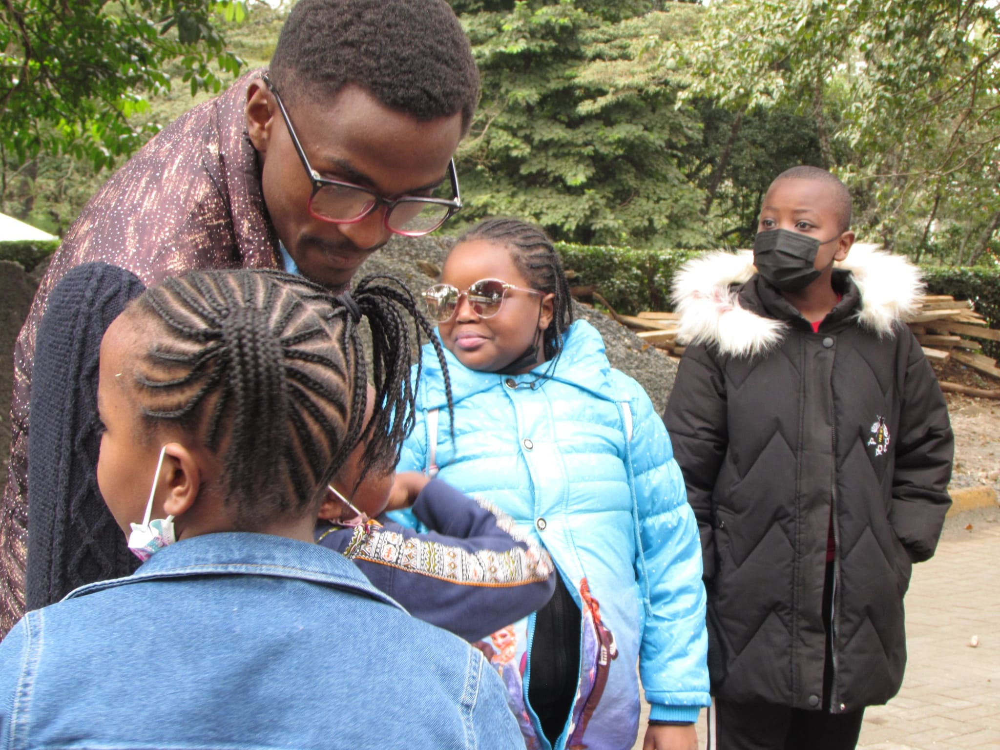

When it comes to arriving in style, you know no kids in Nairobi do it better than the Amazing Kidsüòé
We gathered around for a quick catch up and head count. Then departed for a stroll around our beautiful museum.
We walked in twos for each one of us to be accountable for someone during the day. which was in line with the theme of the day; friendship.
The nature walk was breathtaking for most of us. We were mesmerized by the river stream, the beautiful bridge we walked through, the nature trails and most of all each other's company. After the morning stroll, teacher Brian engaged us in 2 fun games: The first one; Tom, Tommy, Tommy Tommy. Yes it was as fun as it sounds.
For the second game, we split into two groups. The game; “A Battle of The Bible Verses”. Each group would get a period for discussion then pick their memory verse champions to represent them. Here are the memory verses presented.
John 3:16,
Proverbs 12: 1-2,
Ephesians 6: 1,
1st John 4: 11 AKA our bible verse of the day pertaining friendship,
Galatians 5: 22-23,
Proverbs 12: 19,
Colossians 4:6,
and finally, Proverbs 3:5-6.
Clearly guys knew their Bibles verses quite well! For a job well done the guys deserved a reward. So they went to have fun at the swings
then enjoyed snack time together.
We were ready for the main event of the day. The tickets were ready but before going in, we took a photo outside the museum,
queued,
then headed straight into the museum. Here's our lovely adventure inside the museum.
What a nice indoor adventure that was. We saw so many animals and learnt so much about them.
After, we assembled outside, took this nice picture on this mural wall art
and then headed for the snake park. We met other amazing people too who were also here for the same reasons as we were.
Inside we saw snakes, alligators, crocodiles and lots of fish.
After all we had seen, we were so eager to meet with Teacher Ruth and tell her all about it.
What an amazing day we had!! Everyone definitely had a lot of fun. Our adventure finally coming to an end, we assembled for the last time at the parking lot to take some sandwiches,
prayed thanking God for the lovely day we just had then got picked up by our lovely parents and headed home.